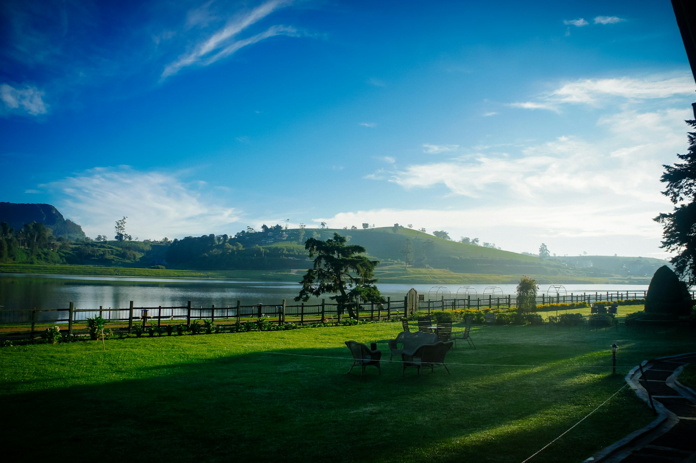
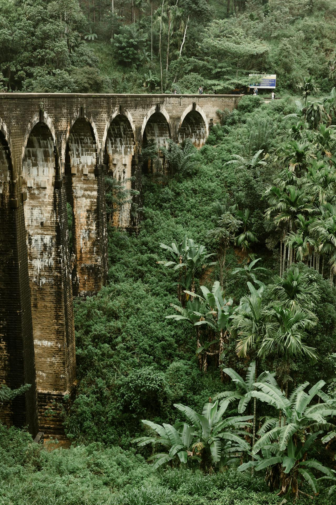
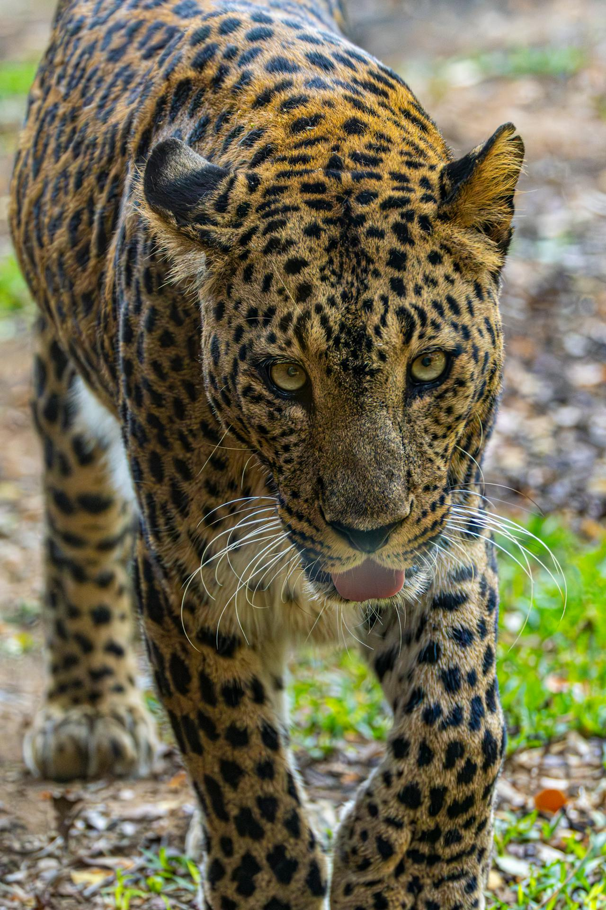
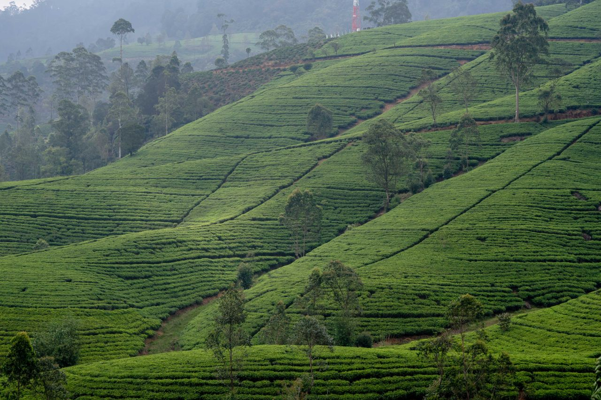

Culture & history
Ancient wonders
Walk through centuries of stories, sacred cities and extraordinary landscapes.
Authentic private tours, thoughtful local expertise and dedicated London support—from the first idea to your safe return home.
Ancient kingdoms, misty highlands, wild national parks and palm-fringed shores—woven into one seamless private journey.
Create your itinerary ↗


Every package is a starting point. Change the pace, hotels and experiences until the journey feels completely yours.
Sigiriya · Kandy · Hill Country · Southern coast
Culture · Wildlife · Tea country · Golden beaches
 21 days
21 daysAncient cities · Jaffna · Highlands · East and south coasts

Our dedicated London office works hand in hand with our expert team in Kandy. You receive clear communication, thoughtful planning and genuine Sri Lankan hospitality at every step.
Absolutely outstanding service from start to finish. Our driver-guide was knowledgeable and caring—our Sri Lanka holiday was perfect.
Share your dates, travel style and wish list. Our UK team will create a personal proposal for you.
Start planning ↗